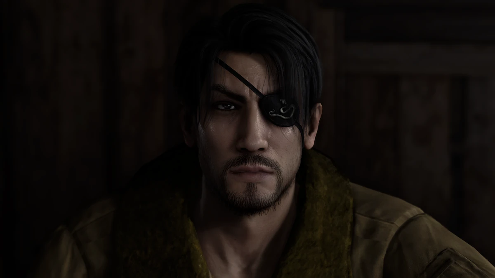

Sample Post
Goro Majima is a prominent character from the "Yakuza" video game series developed by Sega. He is one of the most iconic and memorable characters in the series, known for his complex personality, distinctive appearance, and significant role within the game's narrative.